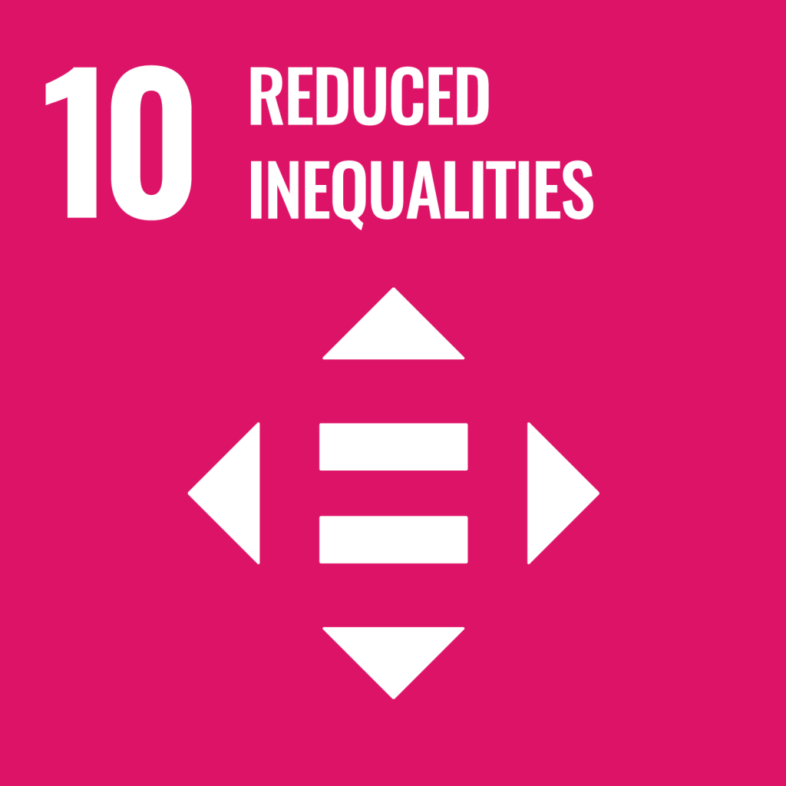

Tentang Kami
Misi Kami
InEdu berkomitmen untuk menyediakan akses pendidikan yang gratis, inklusif, dan berkualitas tinggi bagi semua lapisan masyarakat. Kami fokus pada pemberdayaan penyandang disabilitas, masyarakat kurang mampu, dan komunitas minoritas agar mereka dapat memperoleh kesempatan belajar yang setara dan merata.
Melalui teknologi inovatif dan pendekatan pembelajaran yang adaptif, kami berusaha menghilangkan hambatan fisik, sosial, dan ekonomi yang selama ini menghalangi akses pendidikan.
Hubungan dengan SDG 10
Tujuan Pembangunan Berkelanjutan (SDG) nomor 10 berfokus pada pengurangan kesenjangan di berbagai aspek kehidupan. Tujuan utamanya adalah mengurangi ketimpangan pendapatan dan diskriminasi berdasarkan usia, jenis kelamin, disabilitas, ras, etnis, agama, atau status ekonomi, baik di tingkat nasional maupun internasional. InEdu berkomitmen mendukung SDG ini dengan menyediakan akses pendidikan yang inklusif dan merata bagi semua kalangan.
- Mengurangi kesenjangan akses pendidikan antara kota dan desa.
- Mendukung penyandang disabilitas dalam belajar dengan teknologi bantu.
- Menghapus hambatan bahasa dengan fitur multi-bahasa.
- Meningkatkan partisipasi sosial lewat forum terbuka.
Dampak Sosial
Dengan menyediakan platform edukasi inklusif, kami berharap dapat mengurangi ketimpangan sosial dan meningkatkan kualitas pendidikan di seluruh Indonesia. Kami percaya bahwa pendidikan adalah kunci untuk menciptakan masyarakat yang lebih adil dan berkelanjutan.
Melalui kolaborasi dengan berbagai pemangku kepentingan, kami terus berupaya memperluas jangkauan dan dampak positif dari InEdu.